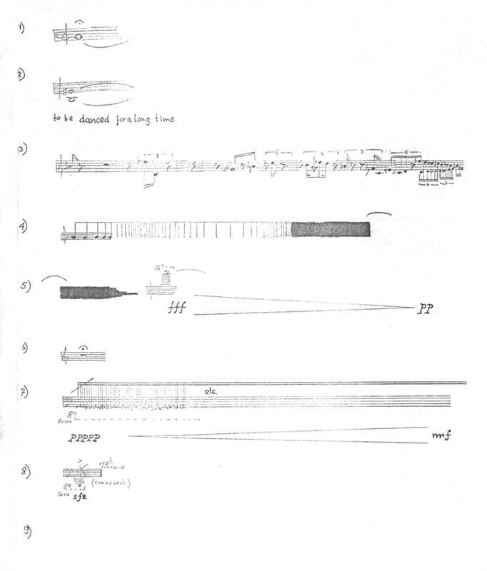

La Caja de Juguetes - Etudio de Movimiento
La
Caja de Juguetes
Estudio de Movimiento
(Música Invisible V)
Emilio Mendoza
para uno o más bailarines
creativos
1977 / 6'
La imagen de la pieza se debe proyectar en el auditorio de tal
manera que el público y los bailarines lo puedan ver siempre.
No debe haber sonido alguno presente en la sala. Se puede
hacer la interpretación continua de las partes Nº 1 al 9,
bailándose fluidamente, o se puede hacer una pequeña cesura o
pausa entre cada número, incluso anunciando cada parte, como
también se puede bailar cualquier combinación a la escogencia
de los bailarines o sólo bailar una sola. Puede bailarse en
grupo y en el orden que se quiera interpretar, así como bailar
un solo número dentro de otro programa. La duración de cada
parte lo decide el intérprete.
